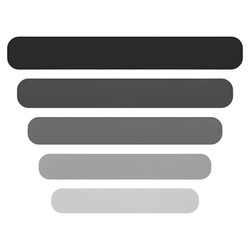

Just Right There!
Double-click the pill to open the editor. Paste text, or use Import for a TXT, PDF or DOCX file. Press Esc or Done to save.
Press the play button in the pill, or click the pill and press Space. While another app has focus, Ctrl+Alt+Space does the same.
Start a Meet or Zoom call, share your whole screen and check the preview. The pill should not show up. Do this once before a real call.
Hidden from Meet, Zoom, Teams, screenshots and recordings.
Sits above every window, full-screen apps included.
30 to 300 words per minute. Nudge the position with the mouse wheel.
Text-based files only. Scanned PDFs have no text to read.
Pill size, font, opacity, light or dark live in Settings.
| Space | Start or stop scrolling |
| + - | Speed up or down by 10 wpm |
| Ctrl+R | Restart from the top |
| Esc | Leave the editor, or fold into the mini pill |
| Ctrl+F | Find in the editor |
| Double-click | Edit the script |
| Ctrl+Alt+Space | Start or stop from anywhere (global) |